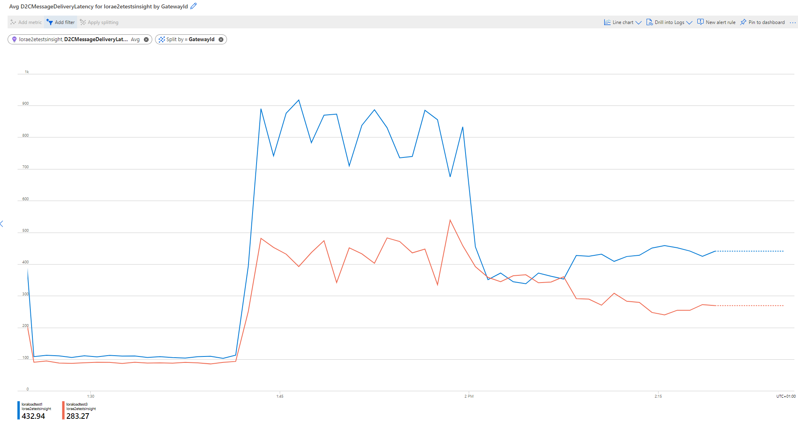

Load Tests
The (simulated) load tests in LoRaWan.Tests.Simulation allow you to generate load on an arbitrary number of gateways by simulating an arbitrary number of concentrators. There are a number of load-test scenarios that are used to simulate real-world scenarios. Typically, you would want to use LNS components that are as close to a production scenario as possible (e.g. LNS deployed on VMs with the correct OS/SKUs in the cloud). You can then run these tests from your local machine to simulate many devices and many concentrators sending a large amount of messages to the gateways deployed in the cloud.
Running the load tests
In LoRaWan.Tests.Simulation you have access to a set of load tests that can be used to validate the performance of the system. If you have access, you can either run the load tests from the E2E CI by setting the RunLoadTests input parameter to true. Alternatively, you can run the tests on your local machine. If you decide to run the tests on your local machine, first to copy the appsettings.json from the Simulator project into a appsettings.local.json and make sure that this file is copied over to the output directory. Replace the tokens in the appsettings.local.json:
- To connect the load tests with a locally running LNS, replace the value in
LoadTestLnsEndpointsStringwith something similar to{"LoadTestLnsEndpointsString":"[\"ws://<lns-url>:5000\"]"}. You can insert an arbitrary number of LNS stations into the array, and the load tests will connect stations to LNS using round-robin distribution. - The
DevicePrefixcan be any prefix that is used for the test devices generating the load. IfCreateDevicesis set totrue, it will create devices with this prefix in the IoT Hub that is referenced in yourappsettings.local.json. - Make sure that the
LeafDeviceGatewayIDmatches the ID of one of the LNS that you connect to the load tests.
Example load tests
All load tests use the Connected_Factory_Load_Test_Scenario load test scenario.
January 25th - 28th 2022, load test of v2.0.0-beta1 in gateway mode (ENABLE_GATEWAY=true)
We ran a set of load tests to ensure that we can support a certain amount of LoRa devices. These tests were performed using gateway mode - passing through the edge hub queue. By taking into account these variables and KPI, we ran several load tests successfully with the parameters we used listed below. For all tests against an IoT Hub S1 instance, we ran at a rate of 1 join request per second and 1 upstream message during the cache pre-warm phase. For all IoT Hub S3 instances we use 3 join requests per second and 3 upstream messages per second during warm-up.
| Succeeded | IoT Hub SKU | Gateway count | Number of devices | Concentrators per gateway | Duration [min] | Total messages sent | Receive windows missed | Avg message delivery time [ms] | Note |
|---|---|---|---|---|---|---|---|---|---|
| true | S1 | 2 | 40 | 2 | 4 | 1240 | 2 | 700 | |
| true | S1 | 2 | 80 | 2 | 6 | 1680 | 2 | 650 | |
| false | S1 | 2 | 120 | 2 | - | - | - | - | |
| true | S1 | 1 | 140 | 4 | 10 | 2940 | 0 | 500 | |
| true | S3 | 1 | 900 | 4 | 25 | 7200 | 0 | 500 | |
| false | S3 | 1 | 1100 | 4 | - | - | - | - |
Issues encountered in these load tests:
- Unexpected ObjectDisposedException when IoT Hub is throttling · Issue #6042 · Azure/iotedge (github.com)
- In case of two gateways and many devices, we quickly run into limitations that come from the fact that IoT Edge is actively managing a cache for each device that connects to it, for which it requires an active connection. Since IoT Hub only allows a single connection per device, multiple Edge Hubs will start competing for the connection on a high frequency. This results in (what we refer to as) connection ping pong and limits scalability on the Edge itself as well as the IoT Hub (throttling). We plan to improve the situation by introducing connection affinity to preferred Edge Hubs in a subsequent release.
The memory/CPU usage of a single IoT Edge host in gateway mode (for 900 devices) was fairly stable at around 1GB of memory used and an average CPU consumption of 40% on a Standard D2s v3 Debian 11 VM:

January 21st 2022, load test of v2.0.0-beta1 in direct mode (ENABLE_GATEWAY=false)
Warning
Direct mode is not recommended for production use, as it has limitations with respect to message delivery guarantees. If you decide to use this, you may lose messages.
This load test used the default deduplication strategy. First, we deployed two LNS on Standard D2s v3 Debian 11 VMs (2vCPU, 8GB of memory). We simulated 1600 OTAA devices, distributed among 8 factories with 4 concentrators each. All devices are in reach of all concentrators within the same factory and send 5 messages each, starting with a join rate of 1.5 messages per second and then progressively sending messages faster and faster (starting at 1.5 messages per second to pre-warm the cache and not hit IoT Hub S1 quota, and then successively increase the load to around 9.5 messages per second). Keep in mind that the effective message rate is higher than 9.5 messages per second, since every message is delivered to the gateways by the four concentrators per factory. The following bugs/issues became apparent in the load test:
- AMQP exceptions when running load tests · Issue #1348 · Azure/iotedge-lorawan-starterkit (github.com)
- AMQP exceptions when handling > 1000 devices · Issue #1337 · Azure/iotedge-lorawan-starterkit (github.com)
- We should send messages upstream when on DeduplicationStrategy Mark or None. · Issue #1032 · Azure/iotedge-lorawan-starterkit (github.com)
- Resubmit threshold does not consider deduplication strategy used · Issue #1334 · Azure/iotedge-lorawan-starterkit (github.com)
- Investigate memory evolution of LNS under load · Issue #1374 · Azure/iotedge-lorawan-starterkit (github.com)
In addition to these issues, for which we will not provide more details here, we discuss several performance/health indicators.
Unhandled exceptions: For a total of ca. 10k messages sent, all exceptions that we saw (ca. 48) were caused by one of the issues mentioned above.
D2CMessageDeliveryLatency: The D2C message delivery latency took a distinct shape for the three phases: in the join phase, the average processing time was ca. 100ms, then for the first round of messages (cache pre-warming) the average delivery/response time was ca. 800ms on the gateway winning the race. As soon as the cache was warm, the response time dropped to ca. 450ms. No receive windows were missed for all ca. 10k messages.

Memory and CPU usage: CPU usage was fairly stable, while memory was staying between 100 and 130MB for the LNS during the entire load test. To ensure that we do not have a memory leak, we ran a longer load test over the course of several hours, during which memory was bounded at ca. 200MB and analysis of the Heap Dump revealed that the largest contributor to the Gen 2 Heap were the device connections (as expected), which the LNS manages in an internal cache.

January 24th, 2022 load test of v2.0.0-beta1 (ENABLE_GATEWAY=false). This load test was for deduplication strategy drop, the same parameters as the January 21st load test, except that we send seven messages per device, ending at 13.5 messages per second (giving a total of 12800 messages in one hour). The analysis was identical to the January 21st load test, there were no new findings and observations match everything we saw before.
Created: 2022-01-31